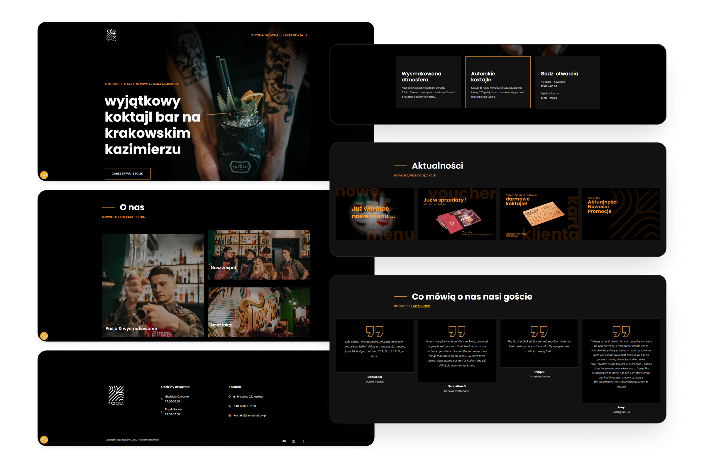

A fast way to build websites
WordPress projects
General information about projects
For example, I chose 3 of several projects I implemented in Wordpress: gastronomy, industry, and real estate. Below it presents the general assumptions and goals for individual websites.
TRZCINA BAR - gastronomy (cocktail bar)
Role: Web designer / Copywriter
Duration: 3 days (year of implementation - 2023)
Main goal: online presence, menu presentation
DESTO - industry (subdomain)
Role: Web designer / Copywriter
Duration: 14 days (year of implementation - 2021)
Main goal: presentation of a new product line
BROMIRSCY - real estate
Role: Web designer
Duration: 14 days (year of implementation - 2021)
Main goal: online presence, brand building, offer presentation
Why did these companies choose WordPress?
1. They wanted quick implementation.
2. They wanted to easily edit the content themselves.
3. As small companies, their budget was limited.
Trzcina
Bar
-
Main challenge
technologically outdated server - no WordPress autoinstallation
-
Solution
employment of a beck-end developer
-
Design process
determining the structure and type of the content; selecting the appropriate template & editing CSS; preparation of content and photos
-
Installed plugins
Google Analytics for WordPress by MonsterInsights, Gutenverse, CookieYes/GDPR Cookie Consent, Akismet Anti-spam: Spam Protection
-
Additional information
I have been working with this brand for several years, so it was easy for me to adapt the style of the website to their local atmosphere.
Home page
Reservation page
Menu page
Summary
The website was quickly implemented. Beck-end has prepared the database well, thanks to which the website loads quickly and smoothly.
The photos provided by the client only required a bit of retouching. The texts I prepared perfectly matched the owner's taste and the general character of the company.
Next step: implementing the English version.
Desto
disinfection
-
Main challenge
creating a website for a completely new product line, easy content editing and adding a new product
-
Solution
simple structure, use of predefined template blocks
-
Design process
determining the structure and type of the content; selecting the appropriate template & editing CSS; preparation of graphic elements (icons, video) and photos; corrections in texts prepared by the client
-
Installed plugins
Google Analytics for WordPress by MonsterInsights, Yoast SEO, WPForms Lite, CookieYes/GDPR Cookie Consent, Akismet Anti-spam: Spam Protection
-
Additional information
This company deals with industrial automation on a daily basis, so they needed a website for disinfection products that would be quite neutral - only the logo would be the link.
Home page
Products page
Other elements
Summary
The materials prepared by the client required editing and retouching. Using ready-made template components (e.g. accordion) accelerated the process of entering content onto the website.
One of the ideas was to implement an online store engine - after long discussions with the client, we stuck to the order form.
Next step: currently, the website is not positioned or updated, only basic maintenance work is being carried out.
Bromirscy
real estate
-
Main challenge
creating a company website to present properties for sale along with a blog
-
Solution
simple structure, use of predefined template blocks
-
Design process
determining the structure and type of the content; selecting the appropriate template & editing CSS; cropping and retouching photos
-
Installed plugins
Google Analytics for WordPress by MonsterInsights, Yoast SEO, WPForms Lite, CookieYes/GDPR Cookie Consent, Akismet Anti-spam: Spam Protection
-
Additional information
This company is a two-person team that does most things itself. They needed a website that they could quickly edit and easily add new offers. Originally, the website was hosted on a large hosting server (I configured the WorpPress software using the autoinstaller), currently it runs on a smaller server.
Sections
Blog
Summary
I am still responsible for maintaining this website. It turned out that the owners didn't have time to add content themselves, so I've been doing that.
Next step: refreshing the page (especially home); introducing a few visual corrections (spacing); introducing search on the Blog page.
And what is it really like with this WordPress?
Having worked with WordPress for over 5 years, I can see how it is changing - how the creators of templates are trying to keep up with the trends created by Webflow & Wix developers. In my opinion, WordPress is still the simplest CMS for the average user (not related to design or development in any way).
The community is also a big advantage - they create most of the content, which is easy to implement for free or for very little money. Of course, more complex automation functionalities, e.g. marketing processes, are quite expensive solutions. Nevertheless, WordPress CMS offers solutions for every budget and industry.
The editing of templets itself depends on what their creator allows. However, most of my work related to editing the visual aspects was done directly on the .css file. The downside is that each update of the templet reset such changes by uploading its own .css. This is quite annoying but unfortunately necessary for security reasons. The solution is to keep a local backup copy and simply upload your own .css file after the update - it is worth looking at the current one first and comparing what has changed compared to our saved version.